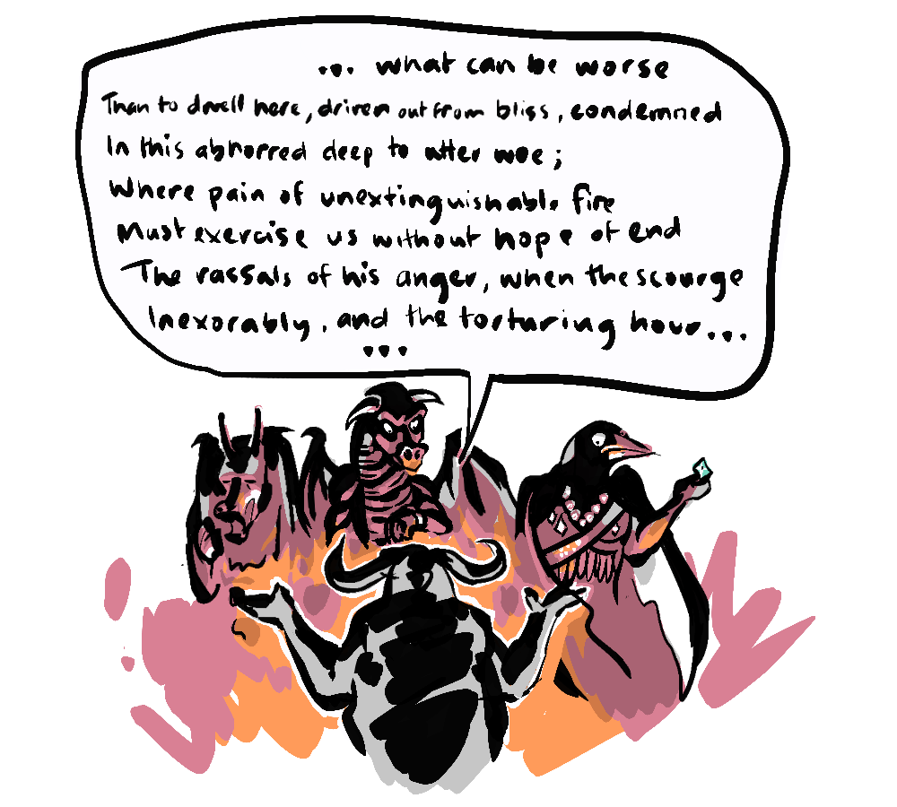

~ the actual story ~
We know that Molochian situations are everywhere, from the baggage claim to the economy. It's a metaphor that helps us understand the pernicious nature of negative-sum games - when our rational short-term individual decisions create a system that is detrimental to all, making us complicit in our own subjugation.
But what about the foundational story? What should the original victims of Moloch do?.
I mentioned in Part 1 that the Canaanites were acting rationally by offering the occasional child for sacrifice, but that's not entirely true. The actual optimal solution is to use some Game Theory because right now we have a chronically bad situation.
So, if on one hand, the tyrant can and will destroy literally everything, this is an absolutely bad outcome, a game-over scenario, this is indeed worse than a chronically bad situation. But if there is a chance that some of the population can survive the consequences of refusing to submit, leading to the starvation of Moloch, then you are measuring a chronically bad situation with a finitely bad situation. And a situation that is finitely bad, as long as it is not absolutely bad (game over) is better than a chronically bad situation.

So. the optimal solution is to rebel and starve the tyrant.
Ironically, in John Milton's Paradise Lost, this is the path for which Moloch advocates when addressing his wretched compatriots; open war against God. Now, Satan famously stated...
"Better to reign in Hell than serve in Heav'n" - Satan
Moloch goes one further, to propose (and I'm paraphrasing) that it's even better to risk death attempting to conquer Heaven, than to rule in Hell.

But this is not the only answer. When we look closer, a better solution becomes evident. The Bible portrays the Canaanites (Moloch's victims in this case) as a war-like, expansionist culture - an account we should approach with some skepticism, given that it also endorses genocide against the Canaanites. Nevertheless, for the sake of argument, let's accept their allegiance with Moloch is precisely to gain his support for their perpetual conquests (which is right up the belligerent Moloch's alley). So, it is actually the desire for conflict and expansion that is driving this unhappy arrangement. Let go of that mandate, and they no longer need Moloch - problem solved.

In Game Theory we are often given an alternative with regards to solutions. This solution however, serves as a reminder that beyond theory, in the messy throes of real-life dilemmas, it's often crucial to seek out a third option, one that's beyond the established parameters.
>